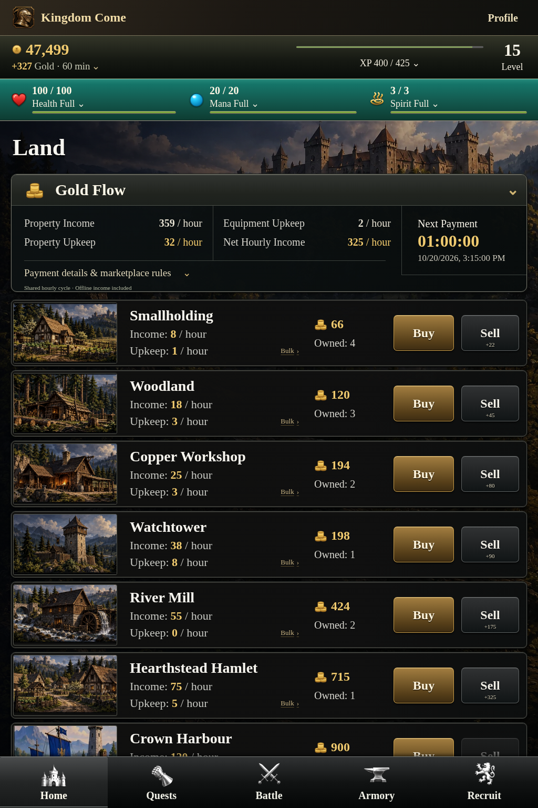

<!doctype html><html lang="en"><meta charset="utf-8"><title>Land — reference and actual render</title><style>*{box-sizing:border-box}html,body{margin:0;background:#080909;color:#f4eee2;font:18px/1.3 Arial,sans-serif}.comparison{display:flex;width:2048px}figure{margin:0;flex:0 0 1024px}figcaption{height:52px;display:flex;align-items:center;justify-content:center;border-bottom:1px solid #77705c;background:#171917}img{display:block;width:1024px;height:1536px}</style><main class="comparison"><figure><figcaption>Owner's definitive mockup · unaltered 1024 × 1536</figcaption></figure><figure><figcaption>Actual Land screen · 1024 × 1536 · synthetic test data</figcaption></figure></main></html>